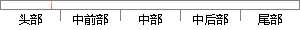

在本章中我们主要关注信誉系统与机器学习。
片段位置图

相似结果|
相似片段 1：动态负载均衡更能反映网格系统的真实情况。在网格资源调度的过程中通常我们考虑负载均衡主要解决的任务是：解决网格资源拥塞问题；为用户提供更好更快的资源调度；提高资源的利用效率。 在本章所提出的基于信誉
|
※ 片段修改建议 ※
近似词参考：- 我们：咱们
- 主要：首要 重要
- 关注：存眷
- 信誉：诺言 信用
- 系统：体系
- 机器：机械 呆板
- 学习：进修
系统自动生成语句：在本章中咱们首要存眷诺言体系与机械进修。
注：本片段修改建议为系统自动生成，仅供参考。